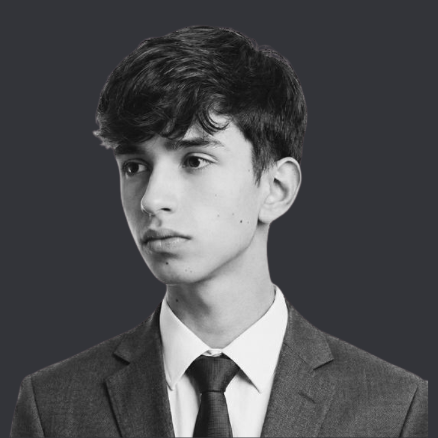

Matías desarrolla soluciones con IA en lowsignal, creando agentes, automatizaciones e integraciones que ayudan a las empresas a simplificar procesos, mejorar su operación y escalar de forma más eficiente.